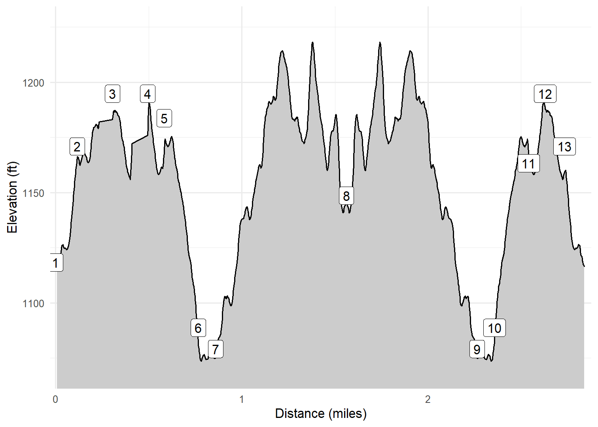

Enger Park Tower & Observation Hill
Duluth, MN
Kim, Cash and I hiked from the Enger Park entrance, past the Enger Park Tower and Japanese Peace Bell and Garden out to Observation Hill on January 28, 2025. The trail was either part of the Superior Hiking Trail or the Duluth Traverse Trail and offered some beautiful views of Lake Superior, the aerial lift bridge, and areas inland. The tower and Japanese Peace Bell and garden were also interesting. We will come ack in the summer so that we can climb the tower.
Walk-Specific Map
Take Note
- Click on a segment to get specific information.
- Numeric labels correspond to the same labels in the elevation profile and summary information below.
Elevation Profile

Images

MNENGR12: Japanese Peace Bell

MNENGR15: Duluth-Superior Harbor

MNENGR15: Aerial Lift Bridge and Lake Superior

MNENGR17: Kim and Cash on the trail

MNENGR14: Enger Tower
GPX Download
A sanitized GPX file of our hike is here.
Summary Information
| NUM | trackID | Primary | Description | Type | Distance | CumDist | DeltaElev |
|---|---|---|---|---|---|---|---|
| 1 | MNENGR11 | Superior Hiking Trail | Enger Park entrance to Superior Hiking Trail (Enger Tower spur) | Trail | 0.12 | 0.12 | 53 |
| 2 | MNENGR12 | Superior Hiking Trail | Superior Hiking Trail (Enger Tower spur) to Japanese Peace Bell | Trail | 0.12 | 0.23 | 13 |
| 3 | MNENGR13 | Superior Hiking Trail (Enger Tower spur) | Enger Tower entrance to Superior Hiking Trail | Trail | 0.10 | 0.41 | -38 |
| 4 | MNENGR14 | Superior Hiking Trail (Enger Tower spur) | Enger Tower entrance to Japanese Peace Bell | Trail | 0.09 | 0.58 | -32 |
| 5 | MNENGR15 | Superior Hiking Trail | Japanese Peace Bell to Duluth Traverse Trail | Trail | 0.18 | 0.77 | -95 |
| 6 | MNENGR16 | Duluth Traverse Trail | Duluth Traverse Trail to Observation Hill parking area | Trail | 0.09 | 0.86 | -10 |
| 7 | MNENGR17 | Duluth Traverse Trail | Observation Hill parking area to Observation Road | Trail | 0.70 | 1.56 | 70 |
| 8 | MNENGR17 | Duluth Traverse Trail | Observation Road to Observation Hill parking area | Trail | 0.70 | 2.26 | -70 |
| 9 | MNENGR16 | Duluth Traverse Trail | Observation Hill parking area to Duluth Traverse Trail | Trail | 0.09 | 2.36 | 10 |
| 10 | MNENGR15 | Superior Hiking Trail | Duluth Traverse Trail to Japanese Peace Bell | Trail | 0.18 | 2.54 | 95 |
| 11 | MNENGR14 | Superior Hiking Trail (Enger Tower spur) | Japanese Peace Bell to Enger Tower entrance | Trail | 0.09 | 2.63 | 32 |
| 12 | MNENGR13 | Superior Hiking Trail (Enger Tower spur) | Enger Tower entrance to Superior Hiking Trail | Trail | 0.10 | 2.73 | -38 |
| 13 | MNENGR11 | Superior Hiking Trail | Superior Hiking Trail (Enger Tower spur) to Enger Park entrance | Trail | 0.12 | 2.85 | -53 |